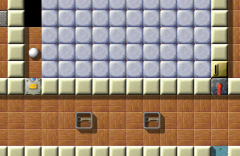
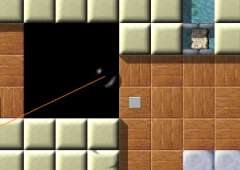

Уровень МесяцаМы хотим каждый месяц больше внимания уделять превосходным уровням. Превосходные уровни это те, у которых средняя оценка пользователей наивысшая и в целом много оценок. Следовательно это Ваш выбор. Поэтому пожалуйста оценивайте уровни, на которых Вы играете и не забывайте присылать Ваши оценки вместе с результатами в конце каждого месяца. Вы можете найти все предыдущие уровни месяца в нашем архиве. Август 2007: «Houdini» от Ronald LamprechtХватайте свой цилиндр, ищите Вашу волшебную палочку, этот месяц будет волшебным! Ronald назвал свой уровень в честь великого циркового артиста Harry Houdini и это точно соответствует Вашему начальному состоянию: привязанные резинкой к камню, охраняемые ворами, заманенные в ловушку с бездной вокруг, а оксиды так далеко за водой и замками, ключи к которым вмурованы в стекло … сможете ли Вы открыть замки и оксиды? В этом уровне Вам потребуются все Ваши умения; логика, точность и ловкость!

Enigma VI # 74
«Houdini» получил среднюю оценку 8.67 от 9 игроков (5 из них голосовали в старой версии), что приносит ему третье место в текущей статистике УМ. Извините, в этом месяце мы не можем опубликовать статистику, потому что последний релиз сделал невозможным сравнение результатов из различных версий :-/. В качестве компенсации, теперь Вы можете отсортировать нашу статистику УМ по рейтингу, месяцу и размещению! «Множество счастливых часов решения головоломок»
Многие уровни-головоломки заставляют игрока пройти по четкому пути, чтобы узнать особенность,
которая откроет эти ускользающие оксиды. Houdini не такой. Houdini предоставляет больше
открытого пространства с мириадами взаимодействий между шахматными камнями, обменными камнями,
рычагами и тормозом. Хотя это открывает множество возможных дорог, не так просто найти тот
единственный, который работает … Tarim всегда удивлялся, когда ошибался в поисках того,
о чем он все время думал, ведь может быть и другой способ завершить уровень. Конечно, это
не всегда так - сколько раз Tarim запоминал почти всю последовательность решения, только для
того, чтобы сорваться в бездну и понять, что он не нажал на рычаг в начальной локации. И он
попадал в ловушку, как муха в янтарь, без каких-либо шансов кроме F3, теряя все свои дополнительные
жизни :( Или случай, когда он случайно выбросил свой знак инь-янь - он немного поигрался с
обменными камнями, пытаясь вернуть его обратно - только для того, чтобы обнаружить (ладно, Вы и сами
можете до этого додуматься …) Ах, этот уровень несомненно подарил Tarim'у множество счастливых
часов решения головоломок :)
Ronald - ярый защитник уровней в которых все открыто - «Houdini» довольно впечатляюще это доказывает. Хотя не все вещи видны сразу, не сложно найти недостающие связи и вещи. Их составление в работающее решение это сложная задача! Harry Houdini был ярым противником медиумов. Конечно, он скрывал свою фокусы от аудитории, но всегда уверял, что все происходит согласно законам природы. Его дружба с Артуром Конан Дойлем дала трещину, когда Дойль стал уверен, что Houdini использует тайные силы и перестал верить объяснениям Houdini. Тогда Houdini решил разоблачить психологов и медиумов, которые плыли на волнах зарождающегося в начале века движения спиритизма. Он стал участником общества «Scientific American» и развенчивал многочисленные аргументы. И, так как в магии Houdini не было ничего потустороннего, Ronald использовал в Enigma только природную механику: никаких камней-таймеров, никаких обращений к скрытым камням или местам, никаких хамелеонов, никаких святых камней, никаких кодов переключателей - только обычная Enigma. Хорошо, с одним исключением …
Когда я начал играть в Houdini, то с самого начала подумал, что он не только сложный, но и чуждый,
непохожий. Обычно в стандартном уровне Вам встречаются и сложные, и простые моменты. В Houdini
Вам некогда отдыхать, трудности следуют одна за другой. Каждая головоломка должна быть аккуратно
разгадана и решена. Ronald проделал впечатляющую работу. Вы должны научиться верховой езде. В сущности,
ходы и поведение шахматных фигур я изучил играя на этом уровне. Ненавидите ли Вы воров? Конечно, да.
Хорошо, в Houdini Вы можете отомстить им и стать охотником за ворами. На первых порах Вы можете вернуть
то, что они у Вас украли. Но будьте осторожны, в некоторых случаях они опасны, одна ошибка и игра
закончится. Есть несколько шагов, чтобы закончить до того, как Вы добьетесь успеха.
Если Вам нравится думать логически и Вы не боитесь тяжелой работы, попробуйте Houdini. Вам он очень
понравится. Я думаю этот уровень «чрезвычайно-сложного» вида, безусловно, лучший в группе
уровней «логика-интеллект-стратегия». Только для упорных игроков.
Если Вы не поняли на что сейчас намекал Ale, попробуйте «Knight's Journey». Хотя может показаться, что он был создан только как подражание «Houdini», это не так. Специально для этого уровня в Enigma была добавлена еще одна возможность - исключение, которое я упомянул выше - и до этого она не использовалась. Итак, я хочу немного рассказать об этом; это будет немного техническим и предназначено авторам уровней. Видели камень с ножницами справа? С версии 1.00 камень с ножницами вызывает свою пару action/target, когда перерезает резинку. Это простое дополнение добавило множество полезных возможностей: Вы можете убедиться, что игрок разрезал резинку перед входом в какую-то часть уровня, заставить его освободить ротор или активировать какое-то более сложное действие. Теперь представьте сеть маленьких белых шариков, связанных резинками и один или несколько камней с ножницами. Открывайте двери, при разрезании резинок, но помните, что после этого шарики меняют свое положение … «В бездну HOUDINI у меня провалилось больше шариков, чем в Троянские воды»Как известно постоянным читателям, я никогда прежде не удостаивался чести работать с моим собственным Уровнем Месяца. Однако, в «Houdini» по крайней мере один маленький кусочек был добавлен мною: да, я тот, кто предложил деревянное покрытие! В начале это было только обсуждение цветов и оформления, сочетания дерева со многими другими элементами. Но, оглядываясь назад, я думаю, что это придало больше шарма этому уровню, ведь он так или иначе похож на сцену фокусника, такого как Harry Houdini … Теперь, давайте послушаем, что Harry может рассказать нам об этом уровне:
Сегодня 31-й день июля, день рождения замысла самого известного волшебника всех времен, Гарри Поттера.
Хороший день, чтобы написать статью о другом волшебнике и другом Harry, Великом HOUDINI, самом известном
фокуснике, иллюзионисте и беглеце начала 20-го века или - многие бы так сказали - всех времен.
Или точнее я попытаюсь изложить мои впечатления от уровня, созданного одним из волшебников Enigma,
мистера Ronald Lamprecht, который очевидно был вдохновлен искусством HOUDINI освобождаться от цепей и
его слава вылилась в его название: HOUDINI.
Сравнение размеров первого Уровня Месяца Enigma «Island
Labyrinth» с HOUDINI, с его двумя экранами, похоже на сравнение молока и маслобойни. Одним из самых
эффектных трюков HOUDINI было освобождение из огромного количества молока, возможно, смешанного с водой и
затем закрытого.

Авиация также была одним из увлечений Houdini, но без ограничений!
Ни в коем случае игрок не должен прийти к выводам, что его маленький размер облегчает распутывание узлов
HOUDINI. Совсем наоборот - это самый сложный уровень, в котором я смог пройти так далеко. Особенно в
последнем выпуске, «сложный режим» HOUDINI теперь заслуживает этот ярлык, чтобы преуспеть игрок
действительно должен быть мастером освобождения от цепей. И здесь нет «хитростей» доступных
(согласно легендам) Александру Великому с его гордиевым узлом. Я настоятельно рекомендую каждому сначала
попытаться пройти «упрощенный режим».
Вы начинаете игру привязанным резинкой к камню. Ваша первая задача - освободиться от этих оков и открыть
дверь во вторую комнату. Не так-то и легко ходить на привязи как собака. А когда Вы время от времени
натягиваете поводок - это напрасно.
Вам не нужно уж очень внимательно присматриваться, чтобы понять как справиться с
этим заданием. Воплощение Ваших планов требует, чтобы Вы приготовили всю Вашу ловкость, а потом
сконцентрировались. И Вам понадобится много терпения, потому что придется повторять определенные
действия снова и снова.
В частности, прыжки через пропасть привязанным к этой резинке, не трогая тех разбойников это действительно
искусство. Этот вид прыжков с банджи часто плохо заканчивается. В бездну HOUDINI у меня провалилось больше
шариков, чем в Троянские (Trojan - один из уровней Enigma называется "Troy", прим. перев.) воды. Если кто-то из Вас когда-нибудь сможет полюбить этот вид спорта, пожалуйста,
сообщите мне.
Хотя эта часть игры самая сложная, при грубом допущении она составляет одну пятую всего времени, необходимого
для прохождения HOUDINI. Так что еще есть над чем поработать …
С HOUDINI я провел больше времени, чем с любым предыдущим уровнем. Но что меня заставляло продолжать, когда я
оказывался в тупике? Обычного стремления закончить однажды начатое не достаточно. Помогли две вещи:
некоторая магия в названии уровня пробудила внутри меня необыкновенное упорство. Как я увидел в моем
хрустальном шаре, вещи могут меняться на абсолютно противоположные: если бы Ronald решил назвать его
«Chess-Stone-Demo IV», я бы точно сдался. И еще та записка, которую Вы находите, как только
открываете первую дверь. Она напомнила мне одну из моих любимых детских книжек: «Бесконечную историю».
Внезапно исчезло все кроме уровня, который должен быть решен: мир должен быть спасен.
Несколько слов в заключение: «Houdini» сложен, его действительно трудно решить, но в него можно играть,
он доставляет удовольствие, полон сюрпризов и очень хорошо продуман! Блестящая работа, Ronald!
Harry уже упомянул «Troy» - этот уровень бесплатно преподаст Вам несколько уроков верховой езды перед тем, как Вы попробуете показывать фокусы в «Houdini». «Random space» тоже может пригодиться, чтобы привыкнуть к резинкам. «Вольный стиль оформления Houdini это ключ к его многогранности»Вот что сам автор может рассказать об истории его уровня:
В августе 2006-го, в результате совместной мозговой атаки, целью которой было добавление самых подходящих
новых объектов, появился «st-chess». Andreas начал обсуждение некоторых первых образцов и Raoul'ю
понравился камень перемещающийся на 2 клетки вперед, способный перескочить через другой камень. Но, когда
я предложил использовать вместо него ход шахматного коня, который мог управляться направлением удара шариком,
все мы незамедлительно согласились. Andreas хорошо постарался, запрограммировав поведение камня и добавив
черно-белый антураж. «Checkmate I», «The Stable» и «Chessing Positions» были
первыми уровнями, использующими новый объект. Теперь был мой черед написать демонстрационный уровень, который
использует все возможности «st-chess», особенно оттого, что я хотел сделать его настоящим врагом
воровских камней.

Связан! Но была ли эта идея разумной?
Поэтому, я пристальней присмотрелся к шаблонам «st-chess» в сочетании с другими камнями. Я
поэкспериментировал с тем, как передвигать «st-chess» в узких аллеях и что нужно, чтобы
остановить «st-chess» пересекающий преграду. Всего за несколько часов я собрал так много
интересных шаблонов, что был уверен, что смогу написать ценный уровень.
Следующим вечером я начал с оформления «Houdini». Из-за утомительного способа перемещения
«st-chess», я ограничил размер уровня 2-мя комнатами. Так как шаблоны были достаточно сложными,
я решил создать уровень WYSIWYG (англ. аббрев. "What You See Is What You Get" - "Что видишь, то и получишь",
прим. перев.). Можно было видеть или разместить обе комнаты и все важные объекты на расстоянии первых
нескольких шагов. Основная сложность уровня состояла в поиске способов достижения очевидных целей с помощью
полученных объектов.
В отличие от «st-wood», который считается одноразовым объектом, когда он погружается в воду или
упирается в стену, «st-chess» может служить многим целям и легко использоваться повторно
в дальнейших задачах. Поэтому я создал целый уровень, чтобы затруднить возможность повторного использования
- ограниченного не «st-chess», а всеми составляющими. Уже доказано, что это само по себе испытание.
Другой прием, который я впервые использовал в «Houdini» и который я сейчас называю
«вольный стиль» - это свобода игрока использовать любой предмет или движимый камень, где он пожелает.
Конечно, сначала Вы должны его освободить - помните, что уровень назван «Houdini». Эта свобода -
еще одно испытание, потому что из-за нее пропадает очевидность того, какие объекты использовать в каждом
конкретном задании. Другое последствие этой свободы - различные шаблоны решения в некоторых местах уровня. Но
все различные придуманные шаблоны решения равноценны и отличаются только очень мелкими деталями. Все другие
появившиеся подходы к решению возмутительно сложны. «Вольный стиль» оформления «Houdini»
это ключ к его многогранности.
Я допускаю, что «Houdini» очень сложный уровень, требующий для решения много рассуждений - запаситесь
терпением. Я рад видеть, что несколько пользователей нашли решение безо всяких подсказок. Пытаясь выбрать
подходящие мне шаблоны я, фактически, создал важные части уровня. Создание «Houdini» заняло у меня всего
2 вечера и день. Я начал в среду, а первую версию отправил в рассылку в пятницу вечером. Позже, я просто
исправил несколько небольших обходных путей и пришел для себя к выводу, что уровень тот еще вызов игроку.
Удачного решения и развлечения!
«Houdini» бесспорно один из самых изощренных уровней теперешней Enigma и не нужно никакого волшебства, чтобы сказать, что он останется одним из лучших уровней в Enigma на многие годы вперед, объединяя уникальную атмосферу и игровой процесс с традиционными игровыми элементами. Ronald, большое тебе спасибо за мастерскую работу над уровнем волшебства! С уважением, |